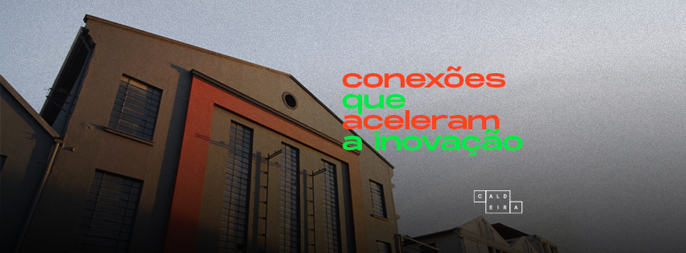
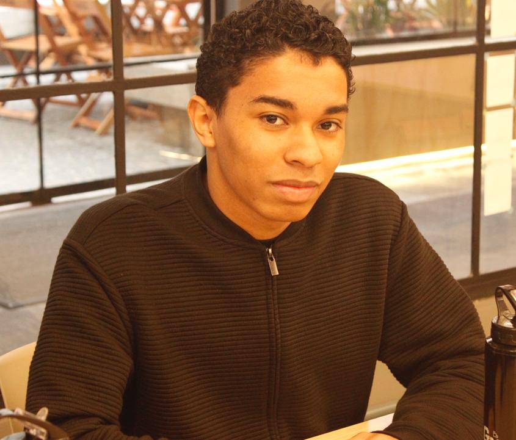
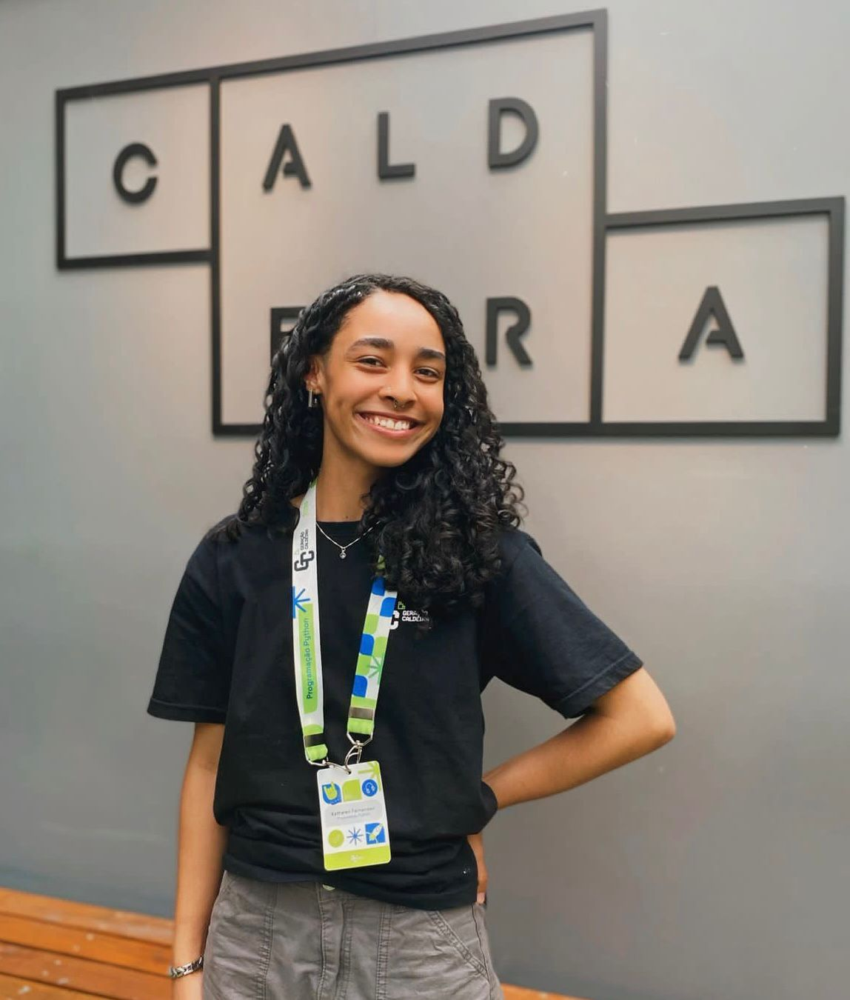
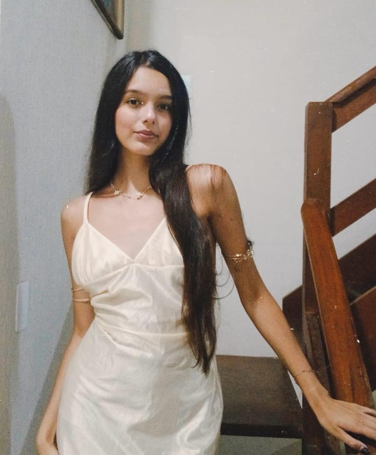
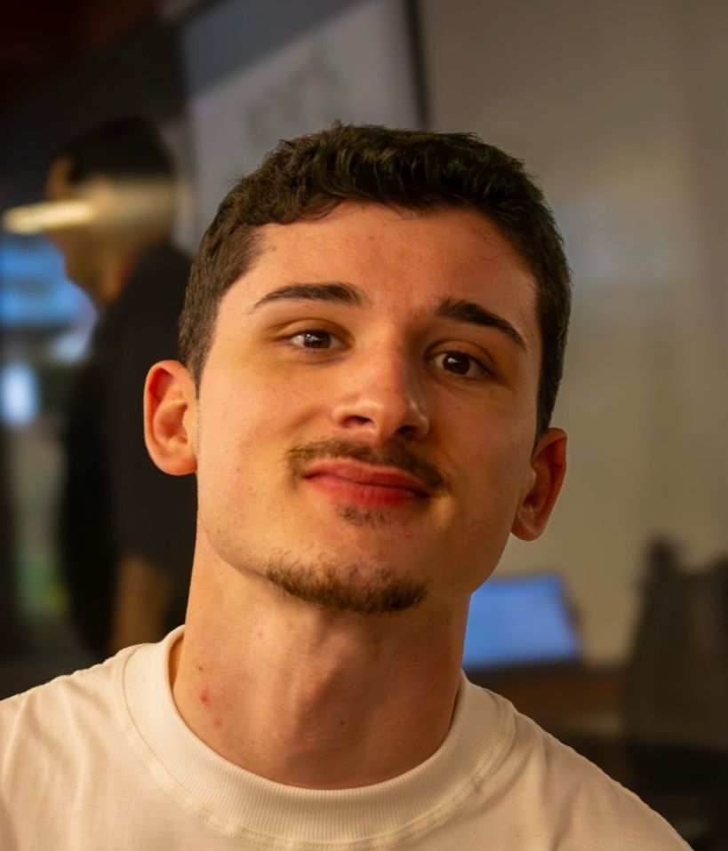

Somos
Somos
uma
comunidade
conectada
pela
inovação.
Quem faz o museu acontecer?

Igor Valêncio
21 anos. Geração Caldeira 2024
IA e Dados

Kethelen
22 anos. Geração Caldeira 2024
Programação Python

Natasha
19 anos. Geração Caldeira 2024
Gestão Comercial
Rismarys
18 anos. Geração Caldeira 2025
Marketing e Design

Vinicius
23 anos. Geração Caldeira 2025
Marketing e Design
Summer Job
O Summer Job é o programa imersivo que conecta jovens talentos do Geração Caldeira ao universo institucional e cultural, com atuação prática em museus e espaços parceiros. Focamos em desenvolver competências profissionais através da interação direta com o público e organização de demandas culturais.
Agradecimento especial: À nossa mentora e professora Ursula, pelo apoio e incentivo fundamentais para o sucesso deste grupo.
Onde nos encontrar
- Casa de Cultura Mário Quintana: R. dos Andradas, 736 - Centro
- MACRS: R. dos Andradas, 736 - Centro
- Museu do Hip Hop: R. Pq. dos Nativos, 545 - Vila Ipiranga
-
Sede: Instituto Caldeira
Tv. São José, 455 - Navegantes